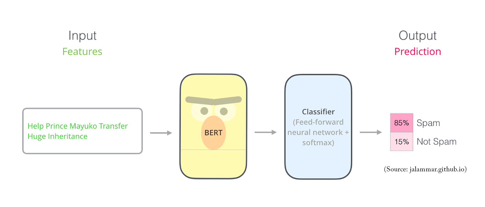

Lê Ngọc Bích Thảo
Bachelor of Science in Software Engineering
Sai Gon University.
A highly motivated and skilled IT professional seeking a challenging role in the field of Information Technology. With a strong background in software development and a passion for innovation, I aim to contribute my expertise to drive technological advancements and enhance organizational efficiency.
Portfolio
Natural Language Processing
CS224n: Natural Language Processing with Deep Learning
My complete implementation of assignments and projects in CS224n: Natural Language
Processing with Deep Learning by Stanford (Winter, 2019).

Neural Machine Translation:
An NMT system which translates texts from Spanish to English using
a Bidirectional LSTM encoder for the source sentence and a
Unidirectional LSTM Decoder with multiplicative attention for the target sentence (
GitHub
)
Dependency Parsing:
A Neural Transition-Based Dependency Parsing system with one-layer MLP (
GitHub
).

Detect Non-negative Airline Tweets: BERT for Sentiment Analysis

The release of Google's BERT is described as the beginning of a new era in NLP. In this notebook I'll use the
HuggingFace's transformers library to fine-tune pretrained BERT model for a classification task. Then I will compare
BERT's performance with a baseline model, in which I use a TF-IDF vectorizer and a Naive Bayes classifier. The transformers
library helps us quickly and efficiently fine-tune the state-of-the-art BERT model and yield an accuracy rate 10% higher than the baseline model.

Detect Food Trends from Facebook Posts: Co-occurence Matrix, Lift and PPMI

First I build co-occurence matrices of ingredients from Facebook posts from 2011 to 2015. Then, to identify interesting
and rare ingredient combinations that occur more than by chance, I calculate Lift and PPMI metrics. Lastly, I plot time-series
data of identified trends to validate my findings. Interesting food trends have emerged from this analysis.

Detect Spam Messages: TF-IDF and Naive Bayes Classifier
In order to predict whether a message is spam, first I vectorized text messages into a format that machine
learning algorithms can understand using Bag-of-Word and TF-IDF. Then I trained a machine learning model to
learn to discriminate between normal and spam messages. Finally, with the trained model, I classified unlabel
messages into normal or spam.

Data Science
Credit Risk Prediction Web App

After my team preprocessed a dataset of 10K credit applications and built machine learning models to predict credit
default risk, I built an interactive user interface with Streamlit and hosted the web app on Heroku server.

Kaggle Competition: Predict Ames House Price using Lasso, Ridge, XGBoost and LightGBM
I performed comprehensive EDA to understand important variables, handled missing values, outliers, performed feature
engineering, and ensembled machine learning models to predict house prices. My best model had Mean Absolute Error (MAE)
of 12293.919, ranking 95/15502, approximately top 0.6% in the Kaggle leaderboard.

Predict Breast Cancer with RF, PCA and SVM using Python
In this project I am going to perform comprehensive EDA on the breast cancer dataset, then transform the data
using Principal Components Analysis (PCA) and use Support Vector Machine (SVM) model to predict whether a
patient has breast cancer.

Business Analytics Conference 2018: How is NYC’s Government Using Money?
In three-month research and a two-day hackathon, I led a team of four students to discover insights from 6 million
records of NYC and Boston government spending data sets and won runner-up prize for the best research poster out of
18 participating colleges.

Filmed by me
Besides Data Science, I also have a great passion for photography and videography. Below is a list of films
I documented to retain beautiful memories of places I traveled to and amazing people I met on the way.
- Ada Von Weiss - You Regret (Winter at Niagara)
- The Weight We Carry is Love - TORONTO
- In America - Boston 2017
- In America - We Call This Place Our Home (Massachusetts)